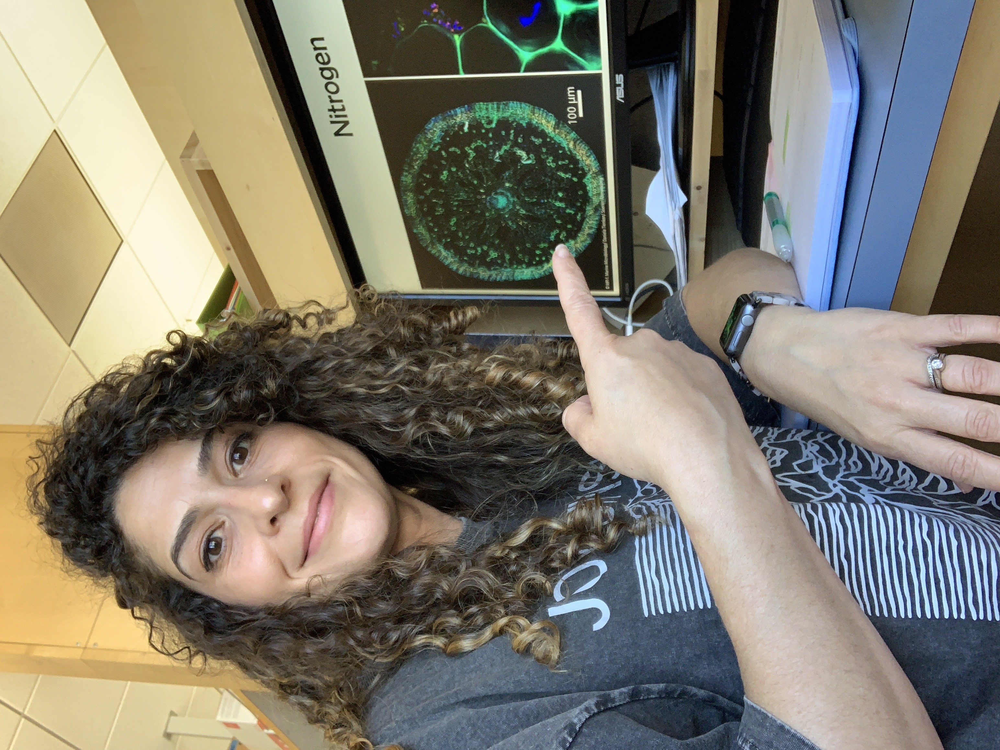

Microbial Ecologist • NSF GRFP Fellow • UC Merced

PhD Candidate • University of California, Merced
I am a microbial ecologist and NSF Graduate Research Fellow at the University of California, Merced. I develop microbial solutions for plant health by combining targeted cultivation, multi-omics characterization, and computational metabolic modeling. My expertise lies in designing growth media to isolate bacteria with specific phenotypes, then using bioinformatic tools to rationally assemble consortia with defined functions.
During my PhD, I engineered plant-based cultivation media to selectively enrich for seagrass-associated bacteria with growth-promoting traits — nitrogen fixation, phosphorus solubilization, auxin production, and sulfide detoxification. From this collection, I used genome-scale metabolic modeling to design a minimal 6-member consortium predicted to produce over 30 beneficial metabolites. I've also led seasonal metatranscriptomic and metabolomic analyses to understand how microbial functions shift across environmental conditions.
I'm drawn to roles where I can apply these skills — micrbial and functional diversity, microbiome product development, microbiome editing, and multi-omics integration. I want to solve real-world problems in agriculture, marine systems, environmental biotechnology, or biomanufacturing.
Before science, I spent eight years as a fashion designer, taking products from prototype to market on aggressive timelines. That experience taught me to iterate fast, manage production pipelines, and deliver functional designs under deadline.